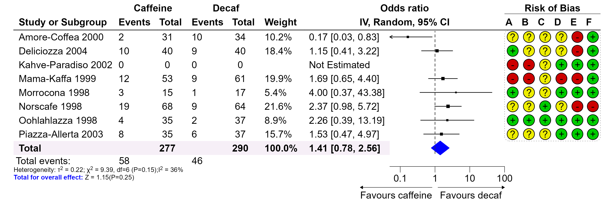
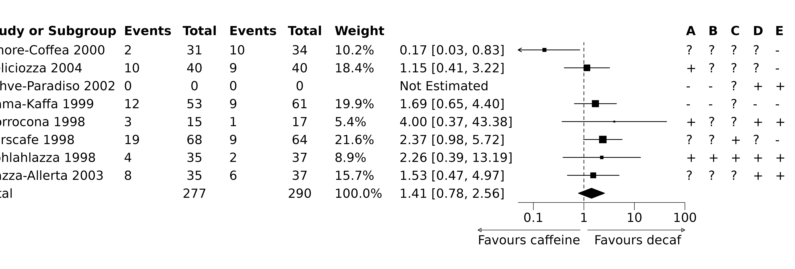
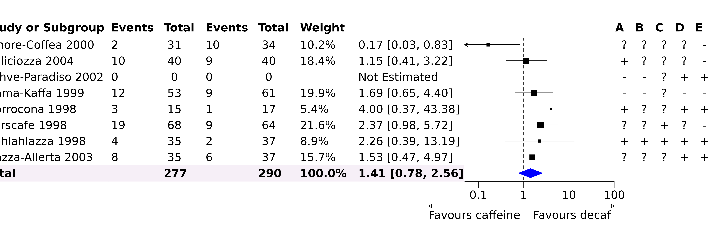
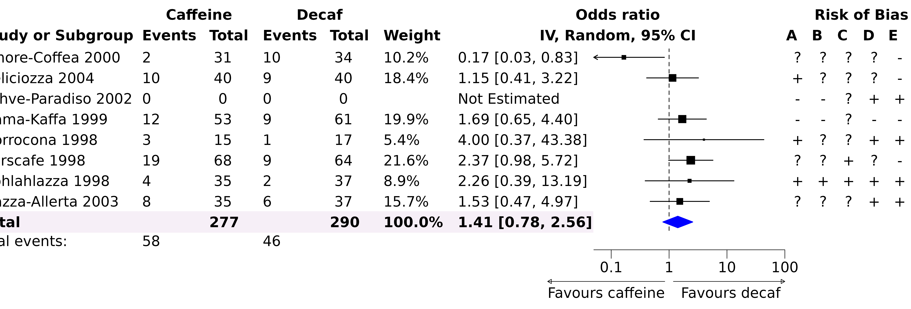
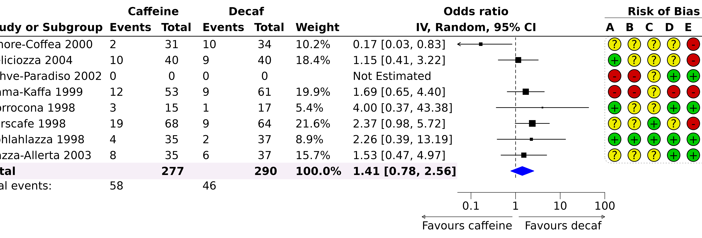
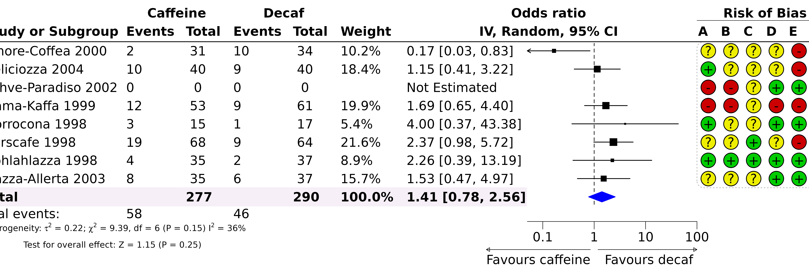
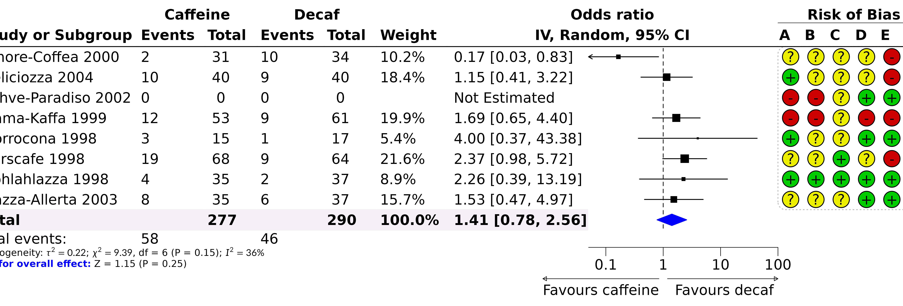

Post-editing Forest Plot
Alimu Dayimu
2026-09-30
Source:vignettes/forestploter-post.Rmd
forestploter-post.RmdPost-editing a Forest Plot
The forestploter package creates plots where all
elements are placed in cells. This structure makes it easy to edit any
element by specifying its row and column. This vignette demonstrates how
to post-edit a forest plot to achieve a publication-ready figure.
The plotting steps demonstrated in this vignette may not necessarily be optimal. There are other R packages that may be better suited for the plots demonstrated here. Please choose the one that best suits your needs. The final plot is shown below:

Drawing a Forest Plot
We will start by drawing a forest plot using an example from the metafor package, which is similar to the plot shown above. First, we load the data and create a simple forest plot.
library(grid)
library(forestploter)
# Read meta-analysis example data
dt <- read.csv(system.file("extdata", "metadata.csv", package = "forestploter"))
str(dt)
#> 'data.frame': 9 obs. of 16 variables:
#> $ author : chr "Amore-Coffea 2000" "Deliciozza 2004" "Kahve-Paradiso 2002" "Mama-Kaffa 1999" ...
#> $ ai : int 2 10 0 12 3 19 4 8 NA
#> $ n1i : int 31 40 0 53 15 68 35 35 277
#> $ ci : int 10 9 0 9 1 9 2 6 NA
#> $ n2i : int 34 40 0 61 17 64 37 37 290
#> $ weights: num 10.19 18.37 NA 19.91 5.37 ...
#> $ orci : chr "0.17 [0.03, 0.83]" "1.15 [0.41, 3.22]" "Not Estimated" "1.69 [0.65, 4.40]" ...
#> $ rb.a : chr "?" "+" "-" "-" ...
#> $ rb.b : chr "?" "?" "-" "-" ...
#> $ rb.c : chr "?" "?" "?" "?" ...
#> $ rb.d : chr "?" "?" "+" "-" ...
#> $ rb.e : chr "-" "-" "+" "-" ...
#> $ rb.f : chr "+" "+" "+" "+" ...
#> $ est : num 0.166 1.148 NA 1.691 4 ...
#> $ lb : num 0.033 0.409 NA 0.65 0.369 ...
#> $ ub : num 0.829 3.219 NA 4.4 43.383 ...
# Prepare a blank column for the CI
dt$cicol <- paste(rep(" ", 20), collapse = " ")
# Select some columns for plotting; this will serve as the skeleton of the forest plot
dt_fig <- dt[, c(1:7, 17, 8:13)]
colnames(dt_fig) <- c("Study or Subgroup",
"Events", "Total", "Events", "Total",
"Weight",
"", "",
LETTERS[1:6])
dt_fig$Weight <- sprintf("%0.1f%%", dt_fig$Weight)
dt_fig$Weight[dt_fig$Weight == "NA%"] <- ""
# Convert NA to a blank string
dt_fig[is.na(dt_fig)] <- ""
# Set background to white, summary diamond to black and closed arrows
st <- forest_style(body = gpar(fill = "white"),
summary = gpar(col = "black"),
arrow_type = "closed",
arrow_label_just = "end")
p <- forest(dt_fig,
est = dt$est,
lower = dt$lb,
upper = dt$ub,
sizes = dt$weights,
is_summary = c(rep(FALSE, nrow(dt) - 1), TRUE),
ci_column = 8,
ref_line = 1,
style = st) |>
set_xaxis(x_trans = "log",
xlim = c(0.05, 100),
ticks_at = c(0.1, 1, 10, 100)) |>
set_labs(arrow = c("Favours caffeine", "Favours decaf")) |>
# Read the sizes as study weights
scale_sizes(method = "range")
p
Editing the Forest Plot
The forestploter package provides several functions to
modify a forest plot. These functions allow you to edit various aspects
of the plot:
-
edit_plot: Changes the graphical parameters of text, backgrounds, and CIs (e.g., the color or font face of specific cells). -
add_text: Adds text to specific rows and columns. This is useful for complex text alignment, as you can leave some rows or columns blank and then add text to them. -
insert_text: Inserts a row and adds text before or after a specified row. This is useful for inserting text between groups. -
add_border: Adds a border to specific cells. -
add_grob: Adds various graphical objects (grobs) to the plot.
They take the plot as their first argument and can be chained with
the pipe |>. Rows and columns refer to the plot as it is
when the function is called. set_xaxis(),
set_labs(), scale_sizes() and
set_style() build the plot again, so they must be used
before any of these editing functions.
Editing the Plot
Below, we will make the “Total” row text bold, change the color of the diamond shape, and modify the background color of the “Total” row. We will also align the text in the last six columns to the center.
g <- p |>
# Change font face
edit_plot(row = 9,
gp = gpar(fontface = "bold")) |>
# Change color
edit_plot(col = 8, row = 9, which = "ci",
gp = gpar(col = "blue", fill = "blue")) |>
# Change the background of the total row
# You need to change both fill and col if you don't want to see a gap between cells
edit_plot(col = 1:7,
row = 9,
which = "background",
gp = gpar(fill = "#f6eff7", col = "#f6eff7")) |>
# Align text to center
edit_plot(col = 9:14,
which = "text",
hjust = unit(0.5, "npc"),
x = unit(0.5, "npc"))
g
For text alignment: - hjust = unit(0, "npc") and
x = unit(0, "npc") align text to the left. -
hjust = unit(0.5, "npc") and
x = unit(0.5, "npc") center-align text. -
hjust = unit(1, "npc") and
x = unit(0.9, "npc") align text to the right.
Adding and Inserting Text
In this step, we will add text to the header and display the total number of events from the data.
# Add or insert some text to the header on top of CI columns
g <- add_text(g, text = "IV, Random, 95% CI",
part = "header",
col = 7:8,
gp = gpar(fontface = "bold"))
g <- insert_text(g, text = "Odds ratio",
part = "header",
col = 7:8,
gp = gpar(fontface = "bold"))
# Group outcomes
g <- add_text(g, text = "Caffeine",
part = "header",
row = 1,
col = 2:3,
gp = gpar(fontface = "bold"))
g <- add_text(g, text = "Decaf",
part = "header",
row = 1,
col = 4:5,
gp = gpar(fontface = "bold"))
# Add text on the top of the risk of bias data
g <- add_text(g, text = "Risk of Bias",
part = "header",
row = 1,
col = 9:14,
gp = gpar(fontface = "bold"))
# Insert event count
g <- insert_text(g,
text = c("Total events:"),
row = 9,
col = 1,
before = FALSE,
just = "left")
# Note: The row counts need to add one to account for
# `insert_text` in the previous step
g <- add_text(g, text = "58",
col = 2,
row = 10,
just = "left")
g <- add_text(g, text = "46",
col = 4,
row = 10,
just = "left")
g
Adding Borders
In this step, we will add borders to the header. By default,
add_border adds a border to the bottom of the specified
cell(s).
# Add or insert some text to the header
g <- add_border(g,
part = "header",
row = 1,
col = 9:14,
gp = gpar(lwd = .5))
g <- add_border(g,
part = "header",
row = 2,
gp = gpar(lwd = 1))
gAdding Grobs
In the next step, we will add a rounded rectangle with a dashed line around the risk of bias data. Then, we will draw circle grobs with different colors at the bottom of the text.
g <- add_grob(g,
row = 1:(nrow(dt_fig) - 1),
col = 9:14,
order = "background",
gb_fn = roundrectGrob,
r = unit(0.05, "snpc"),
gp = gpar(lty = "dotted",
col = "#bdbdbd"))
# Draw a circle grob; you can also draw a `pointsGrob`
cols <- c("#eeee00", "#00cc00", "#cc0000")
symb <- c("?", "+", "-")
for(i in seq_along(symb)){
pos <- which(dt_fig == symb[i], arr.ind = TRUE)
for(j in 1:nrow(pos)){
g <- add_grob(g,
row = pos[j, 1],
col = pos[j, 2],
order = "background",
gb_fn = circleGrob,
r = 0.4,
gp = gpar(fill = cols[i]))
}
}
g
The text we want to create involves math expressions and multiple
lines. While this can be done with add_text by setting
parse = TRUE, we can use the code below to achieve our
desired result. The line break is based on a solution found here,
which uses the atop function. You can also use the latex2exp
package for math expressions.
txt <- bquote(atop(paste("Heterogeneity: ", tau^2, " = 0.22; ",
chi^2, " = 9.39, df = 6 (P = 0.15) ",
I^2, " = 36%"),
"Test for overall effect: Z = 1.15 (P = 0.25)"))
add_text(g, text = txt,
col = 1:6,
row = 11,
just = "left",
parse = TRUE,
gp = gpar(fontsize = 8))
As you can see, the second line is not left-aligned. To address this,
we can use add_grob to leverage other packages that create
grob objects. In this case, we will use the gridmicrotex
package, which renders LaTeX directly as grid grobs without
requiring a LaTeX installation. More details about this package can be
found here. Passing
the LaTeX string through latex_grob or markdown with
markdown_grob gives us both the math expressions and full
control over the line breaks.
With input_mode = "math" the whole string is treated as
math, so \\ starts a new line and \text{}
marks the parts that should be typeset as prose rather than math. Both
lines are flush left, which is what we were after. Individual pieces can
be styled with the usual LaTeX commands, such as \textcolor
and \textbf. Note that % is a comment
character in LaTeX and must be escaped as \%. Using an R
raw string (r"(...)") avoids having to double every
backslash.
txt <- r"(Heterogeneity: $\tau^2 = 0.22$; $\chi^2 = 9.39$, df = 6 (P = 0.15); $I^2 = 36\%$
\textcolor{blue}{\textbf{Test for overall effect:}} Z = 1.15 (P = 0.25))"
add_grob(g,
row = 11,
col = 1:6,
order = "background",
gb_fn = gridmicrotex::latex_grob,
tex = txt,
gp = gpar(fontsize = 8),
hjust = 0, vjust = 1,
x = unit(0, "npc"), y = unit(1, "npc"))
We use render_mode = "path" here, which draws the
symbols as filled vector outlines and works on every graphics device.
The default, render_mode = "typeface", draws them as real
text and keeps the formula selectable in SVG and PDF output, but it
requires a device with glyph support such as ragg::agg_png,
svglite::svglite, or grDevices::cairo_pdf.